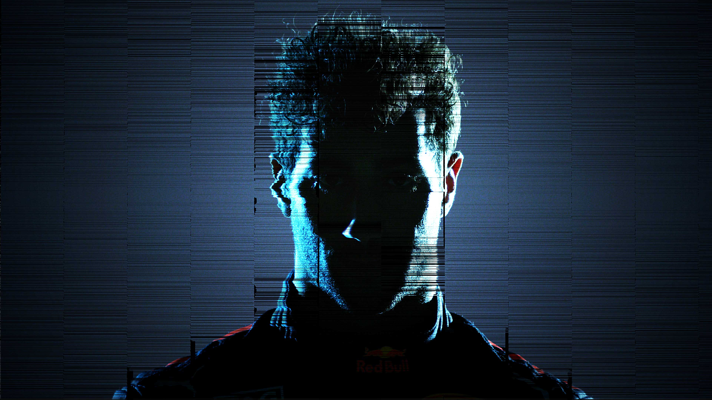
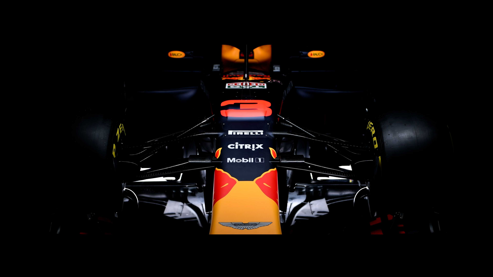
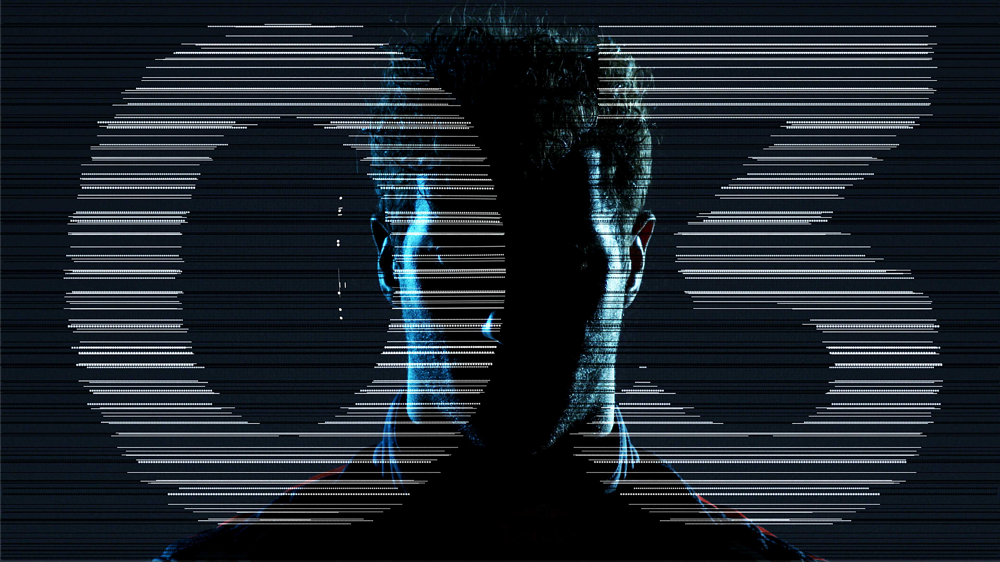
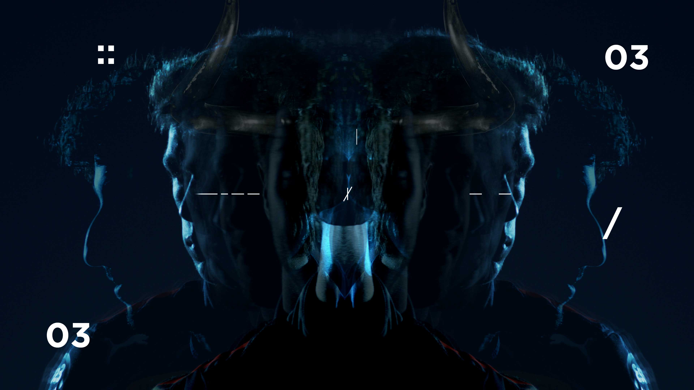
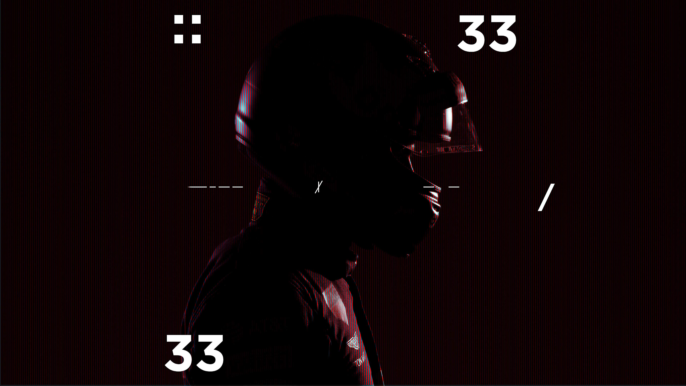
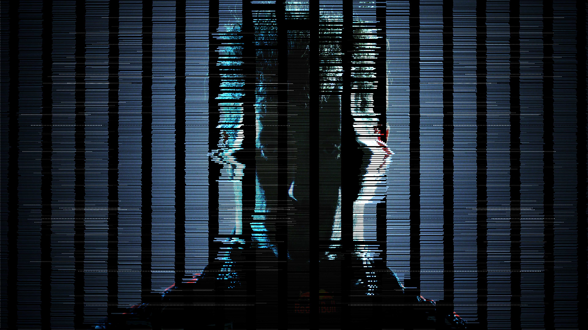

Redbull Formula 1 : The Aston Martin release
Director / Concept / Design & Animation
A promotional film for Aston Martins 2018 new F1 car. We explore flow states and the connection the Redbull drivers Max Verstappen and Daniel Ricciardo have to the car. An expression of mental preparation as they program all of the data necessary to be at one with Astons new F1 car.
Credits
Creative Direction & Lead Design : James Harford
Director of Photography : David Clerihew.
Camera : Louis Mackay






